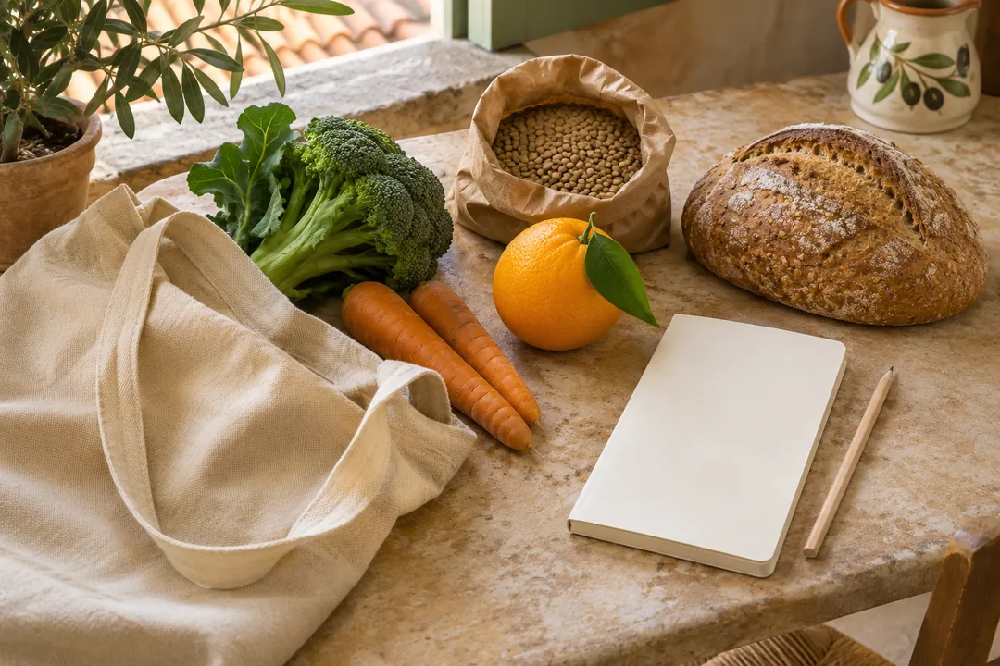

RUBRICA 08 · GUIDA 08 · AGGIORNATA IL 20 NOVEMBRE 2026
Ricette mediterranee semplici: porzioni, nutrienti e costi

Con riso, legumi e verdure puoi preparare piatti usando ingredienti comuni. Le due ricette qui sotto danno le dosi, i carboidrati disponibili in grammi e le calorie stimate per porzione. Per il costo puoi usare i prezzi che trovi dove fai la spesa.
Le quantità proposte descrivono due preparazioni, non il fabbisogno di una persona con diabete, cardiopatia o insufficienza renale. Non usare i valori della ricetta per decidere da solo le dosi di insulina.
Vai alla settimana per due con prezzi documentati
1. Due ricette per calcolare la spesa
| Piatto con foto originale | Carboidrati disponibili per porzione | Calorie per porzione | Ricetta completa |
|---|---|---|---|
| Insalata tiepida di borlotti, riso integrale e pomodori | 36,1 g | 287 kcal | Apri la ricetta 01 → |
| Zuppa di lenticchie, patate e carote | 40,0 g | 298 kcal | Apri la ricetta 02 → |
La raccolta delle ricette contiene anche cinque piatti per una persona, con foto, pesi e valori per porzione.
Tutte e due prevedono due porzioni. Le cifre derivano da tabelle CREA (Consiglio per la ricerca in agricoltura e l’analisi dell’economia agraria) per grammi cotti e scolati quando indicato; non sono analisi di laboratorio del piatto. L'olio è misurato in grammi e compreso nelle calorie. Le fotografie sono dichiarate come immagini generate con AI.
2. Secchi, cotti o in scatola: non sono pesi intercambiabili
Una confezione di lenticchie secche costa per un certo peso crudo. La ricetta della zuppa usa invece 240 g di lenticchie già cotte e scolate. Non prendere automaticamente 240 g dal sacchetto secco: cambierebbero quantità e nutrienti. La versione in scatola scolata ha schede CREA diverse da quella ottenuta dal secco.
La Guida 04 spiega i fattori di resa alla cottura, che sono medie e non equivalenze perfette per ogni marca.
3. Come verificare carboidrati e calorie
Per ogni ingrediente devi conoscere quattro cose: il peso effettivamente utilizzato, lo stato dell'alimento (crudo/cotto/scolato), la scheda CREA o l'etichetta e il numero delle porzioni.
Formula: grammi dell'ingrediente × valore per 100 g ÷ 100. Ripeti per tutti gli ingredienti, somma i risultati, dividi per il numero di porzioni.
Per la zuppa: lenticchie 240 g × 16,3 g carboidrati/100 g; patate 180 g × 16,9; carote bollite 120 g × 8,7; olio 16 g × 0. Totale 79,98 g di carboidrati, divisi in due: 40,0 g per porzione. Le calorie della pentola sono circa 595 kcal: 298 kcal a porzione dopo arrotondamento.
4. Come calcolare quanto ti costa una porzione
Per calcolare il costo del piatto annota negozio, data, prezzo pagato, peso netto acquistato e quantità effettivamente utilizzata. Non usare un generico «costa 50 centesimi» privo di fonte. I prezzi cambiano per provincia, negozio e periodo.
Per le confezioni considera gli scarti e la resa alla cottura. Se compri 500 g di lenticchie secche e utilizzi solo una parte, il costo da attribuire alla ricetta è la quota di prodotto secco impiegata, non il peso dell'acqua assorbita.
5. Una scheda semplice per la spesa
| Dato da scrivere | Esempio di cosa annotare |
|---|---|
| Data e negozio | La data dello scontrino e il punto vendita |
| Prodotto | Lenticchie secche o già cotte? Quale marca? |
| Quantità pagata | Il prezzo effettivo e il peso netto |
| Peso commestibile usato | Parte edibile effettiva, distinguendo cotto e crudo |
| Ingredienti aggiunti | Olio, pane, formaggio, brodo: non dimenticarli |
| Numero porzioni | Quante porzioni uguali sono state effettivamente ottenute? |
6. Se cambi ingredienti, cambiano anche i valori
Le ricette calcolate non si aggiornano da sole quando sostituisci legumi secchi con conserve, aggiungi un dado da brodo o aumenti l'olio. Ricalcola ogni ingrediente; per l'olio 10 g sono circa 90 kcal, anche se non apportano carboidrati. Un brodo comprato può aggiungere molto sale, anche se le calorie sono poche.
Se un piatto tradizionale comprende ingredienti diversi dalla nostra versione, usa la sua composizione effettiva e non i valori di una ricetta soltanto simile.
7. Conservare e cucinare senza sprechi e rischi
Usa pentole adatte alle quantità, conserva i cibi cotti con tempi e temperature appropriati ed evita di lasciare legumi e cereali cotti a lungo a temperatura ambiente. Controlla la data e l'integrità delle confezioni. Spesa economica non significa rinunciare alla sicurezza alimentare.
Un grande quantitativo cucinato una volta sola può essere conveniente, ma solo se puoi conservarlo correttamente. Se sono presenti patologie che impongono restrizioni di sodio, potassio o liquidi, serve prima l'adattamento del piano.
8. Esercizio di verifica
Hai una ricetta per due persone con 80 g di carboidrati disponibili e 600 kcal totali. Se dividi tutto in due porzioni uguali, quanti carboidrati e quante calorie ha una porzione?
Mostra la soluzione
40 g di carboidrati disponibili e 300 kcal. L'esempio è matematico e non rappresenta una ricetta reale.
Una settimana per due persone: menu, prodotti e prezzi documentati
Qui puoi seguire il percorso completo dal menu alla lista e al calcolo delle confezioni. È un esempio per organizzare gli acquisti: ogni ingrediente elencato nei pasti è contato nella spesa. Le quantità sono complessive per due adulti, non per una persona.
Questo esempio non è un piano alimentare validato: non abbiamo verificato i fabbisogni individuali né calcolato calorie e nutrienti dell’intera settimana. Per diabete, terapie o altre esigenze cliniche usa le quantità concordate con il professionista. I valori delle due ricette precedenti non si applicano a questo menu.
La scelta di cereali integrali, legumi, ortaggi, frutta, olio extravergine e fonti proteiche alternate si ispira alle indicazioni generali del Ministero della Salute e alle Linee guida CREA. Queste fonti non hanno approvato il nostro menu o i prodotti scelti.
Come sono stati raccolti i prezzi
Rilevazione: 20 novembre 2026, catalogo pubblico Cicalia. Per ciascuno dei 22 prodotti abbiamo letto prezzo, formato e presenza del comando «Aggiungi al carrello». È una disponibilità osservata nel catalogo: consegna al tuo CAP, scorte al momento dell’ordine e prezzo finale possono cambiare. Non abbiamo effettuato acquisti o ricevuto compensi. Il confronto non dimostra che questo sia il negozio più conveniente.
Per frutta e ortaggi il venditore indica pesi «circa»: il conto usa quel peso nominale. Mele, clementine, ortaggi e patate sono pesati prima di pulizia e scarti; cereali e legumi sono pesati secchi, pollo crudo. Lo sgombro è contato a scatole da 125 g totali: non attribuiamo 125 g al prodotto sgocciolato.
Colazione e spuntini, ogni giorno
Per due: colazione con Yogurt bianco magro: 250 g; Fiocchi di avena: 80 g; Mele Golden: 300 g. Spuntini con Clementine: 400 g; Mandorle pelate: 30 g. Sono quantità del conto dimostrativo, da adattare al proprio piano.
In ogni pranzo e cena il conto comprende anche 40 g di cipolla, 20 ml di olio extravergine e 1 g di sale aggiunto, sempre per due. Il sale dei prodotti confezionati è ulteriore: questa indicazione contabile non è un obiettivo di consumo. Acqua potabile per bere e cucinare non conteggiata; nessuna bevanda zuccherata o alcolica è prevista.
Lunedì · Pasta, ceci e broccoli / Pollo, patate e zucchine
Pranzo: Pasta, ceci e broccoli
Pasta integrale: 160 g; Ceci secchi: 120 g; Broccoli: 300 g. Aggiungi i condimenti già conteggiati sopra.
Cena: Pollo, patate e zucchine
Petto di pollo crudo: 300 g; Patate: 600 g; Zucchine: 300 g. Aggiungi i condimenti già conteggiati sopra.
Martedì · Riso, lenticchie e carote / Uova, spinaci e pane
Pranzo: Riso, lenticchie e carote
Riso integrale: 140 g; Lenticchie rosse secche: 120 g; Carote: 200 g. Aggiungi i condimenti già conteggiati sopra.
Cena: Uova, spinaci e pane
Uova: 4 pezzi; Spinaci: 300 g; Pane integrale di segale: 160 g. Aggiungi i condimenti già conteggiati sopra.
Mercoledì · Pasta al pomodoro con broccoli / Sgombro, patate e carote
Pranzo: Pasta al pomodoro con broccoli
Pasta integrale: 160 g; Passata di pomodoro: 250 g; Broccoli: 300 g. Aggiungi i condimenti già conteggiati sopra.
Cena: Sgombro, patate e carote
Scatole di sgombro al naturale: 2 scatole; Patate: 500 g; Carote: 300 g. Aggiungi i condimenti già conteggiati sopra.
Giovedì · Riso, ceci e spinaci / Zuppa di lenticchie e carote con pane
Pranzo: Riso, ceci e spinaci
Riso integrale: 140 g; Ceci secchi: 120 g; Spinaci: 300 g. Aggiungi i condimenti già conteggiati sopra.
Cena: Zuppa di lenticchie e carote con pane
Lenticchie rosse secche: 120 g; Carote: 200 g; Passata di pomodoro: 200 g; Pane integrale di segale: 160 g. Aggiungi i condimenti già conteggiati sopra.
Venerdì · Pasta, lenticchie e pomodoro / Pollo, broccoli e pane
Pranzo: Pasta, lenticchie e pomodoro
Pasta integrale: 160 g; Lenticchie rosse secche: 120 g; Passata di pomodoro: 200 g; Carote: 200 g. Aggiungi i condimenti già conteggiati sopra.
Cena: Pollo, broccoli e pane
Petto di pollo crudo: 300 g; Broccoli: 400 g; Pane integrale di segale: 160 g. Aggiungi i condimenti già conteggiati sopra.
Sabato · Riso con zucchine, carote e mandorle / Uova, zucchine e pane
Pranzo: Riso con zucchine, carote e mandorle
Riso integrale: 140 g; Zucchine: 200 g; Carote: 100 g; Mandorle pelate: 30 g. Aggiungi i condimenti già conteggiati sopra.
Cena: Uova, zucchine e pane
Uova: 4 pezzi; Zucchine: 300 g; Pane integrale di segale: 160 g. Aggiungi i condimenti già conteggiati sopra.
Domenica · Pasta, ceci, pomodoro e broccoli / Sgombro, spinaci e pane
Pranzo: Pasta, ceci, pomodoro e broccoli
Pasta integrale: 160 g; Ceci secchi: 120 g; Passata di pomodoro: 200 g; Broccoli: 200 g. Aggiungi i condimenti già conteggiati sopra.
Cena: Sgombro, spinaci e pane
Scatole di sgombro al naturale: 2 scatole; Spinaci: 300 g; Pane integrale di segale: 160 g. Aggiungi i condimenti già conteggiati sopra.
Per la cottura dei legumi, l’ammollo quando richiesto e la conservazione segui le istruzioni delle confezioni. Le dosi sopra sono da pesare prima della cottura; non sostituirle con pari grammi di legumi cotti.
Quanto risulta dal conto
115,19 € è il costo proporzionale delle sole quantità elencate per due persone nella settimana.
149,06 € è l’esborso teorico per acquistare tutte le confezioni intere, partendo con la dispensa vuota. Restano quantità nominali per un valore proporzionale di 33,87 €, utilizzabili solo entro le scadenze e con conservazione corretta.
Spedizione esclusa. Sono esclusi anche acqua, energia di cottura e qualsiasi acquisto aggiuntivo. Il totale pagato online dipende da indirizzo, pesi effettivi e supplementi: controlla le condizioni del venditore e il preventivo prima di ordinare. Questo non è un preventivo di consegna.
La lista completa delle confezioni
Apri il collegamento di ogni prodotto per ricontrollare prezzo e disponibilità. I residui sono nominali, prima degli scarti. La passata è conteggiata all’offerta osservata di 1,59 € fino a tre bottiglie: qui ne servono due; la scadenza della promozione non è stata accertata.
Pasta integrale
Rummo penne integrali n. 66. Confezione: 500 g; prezzo: 2,55 €.
Nel menu: 640 g. Da acquistare: 2 confezioni = 5,10 €. Quantità residua: 360 g.
Costo attribuito alla quantità del menu: 3,26 €.
Riso integrale
Scotti integrale 10 minuti. Confezione: 1000 g; prezzo: 5,05 €.
Nel menu: 420 g. Da acquistare: 1 confezioni = 5,05 €. Quantità residua: 580 g.
Costo attribuito alla quantità del menu: 2,12 €.
Pane integrale di segale
Pema. Confezione: 500 g; prezzo: 3,65 €.
Nel menu: 800 g. Da acquistare: 2 confezioni = 7,30 €. Quantità residua: 200 g.
Costo attribuito alla quantità del menu: 5,84 €.
Fiocchi di avena
Fiorentini. Confezione: 500 g; prezzo: 2,45 €.
Nel menu: 560 g. Da acquistare: 2 confezioni = 4,90 €. Quantità residua: 440 g.
Costo attribuito alla quantità del menu: 2,74 €.
Ceci secchi
La Conserviera. Confezione: 500 g; prezzo: 3,89 €.
Nel menu: 360 g. Da acquistare: 1 confezioni = 3,89 €. Quantità residua: 140 g.
Costo attribuito alla quantità del menu: 2,80 €.
Lenticchie rosse secche
La Conserviera. Confezione: 500 g; prezzo: 2,59 €.
Nel menu: 360 g. Da acquistare: 1 confezioni = 2,59 €. Quantità residua: 140 g.
Costo attribuito alla quantità del menu: 1,86 €.
Yogurt bianco magro
Vipiteno. Confezione: 500 g; prezzo: 2,15 €.
Nel menu: 1750 g. Da acquistare: 4 confezioni = 8,60 €. Quantità residua: 250 g.
Costo attribuito alla quantità del menu: 7,53 €.
Petto di pollo crudo
M. Mutti, a fette. Confezione: 300 g; prezzo: 8,95 €.
Nel menu: 600 g. Da acquistare: 2 confezioni = 17,90 €. Quantità residua: 0 g.
Costo attribuito alla quantità del menu: 17,90 €.
Uova
Coccodì, confezione da 10. Confezione: 10 pezzi; prezzo: 3,79 €.
Nel menu: 8 pezzi. Da acquistare: 1 confezioni = 3,79 €. Quantità residua: 2 pezzi.
Costo attribuito alla quantità del menu: 3,03 €.
Scatole di sgombro al naturale
Rio Mare, scatola da 125 g totali. Confezione: 1 scatole; prezzo: 4,25 €.
Nel menu: 4 scatole. Da acquistare: 4 confezioni = 17,00 €. Quantità residua: 0 scatole.
Costo attribuito alla quantità del menu: 17,00 €.
Si contano le scatole; il peso netto totale di 125 g non è il peso sgocciolato.
Carote
Confezione da circa 1 kg. Confezione: 1000 g circa; prezzo: 2,29 €.
Nel menu: 1000 g. Da acquistare: 1 confezioni = 2,29 €. Quantità residua: 0 g.
Costo attribuito alla quantità del menu: 2,29 €.
Zucchine
Nostrane, circa 1 kg. Confezione: 1000 g circa; prezzo: 3,65 €.
Nel menu: 800 g. Da acquistare: 1 confezioni = 3,65 €. Quantità residua: 200 g.
Costo attribuito alla quantità del menu: 2,92 €.
Spinaci
Busta da circa 400 g. Confezione: 400 g circa; prezzo: 2,85 €.
Nel menu: 900 g. Da acquistare: 3 confezioni = 8,55 €. Quantità residua: 300 g.
Costo attribuito alla quantità del menu: 6,41 €.
Broccoli
Verdi, circa 500 g. Confezione: 500 g circa; prezzo: 2,05 €.
Nel menu: 1200 g. Da acquistare: 3 confezioni = 6,15 €. Quantità residua: 300 g.
Costo attribuito alla quantità del menu: 4,92 €.
Passata di pomodoro
Santa Rosa. Confezione: 700 g; prezzo: 1,59 €.
Nel menu: 850 g. Da acquistare: 2 confezioni = 3,18 €. Quantità residua: 550 g.
Costo attribuito alla quantità del menu: 1,93 €.
Prezzo promozionale osservato: 1,59 € invece di 1,79 €, fino a 3 pezzi. Nel paniere servono 2 bottiglie. Durata della promozione non accertata.
Patate
Rete da circa 2 kg. Confezione: 2000 g circa; prezzo: 3,85 €.
Nel menu: 1100 g. Da acquistare: 1 confezioni = 3,85 €. Quantità residua: 900 g.
Costo attribuito alla quantità del menu: 2,12 €.
Cipolle dorate
Rete da circa 1 kg. Confezione: 1000 g circa; prezzo: 2,19 €.
Nel menu: 560 g. Da acquistare: 1 confezioni = 2,19 €. Quantità residua: 440 g.
Costo attribuito alla quantità del menu: 1,23 €.
Mele Golden
Melinda, calibro 75–80, circa 1 kg. Confezione: 1000 g circa; prezzo: 4,05 €.
Nel menu: 2100 g. Da acquistare: 3 confezioni = 12,15 €. Quantità residua: 900 g.
Costo attribuito alla quantità del menu: 8,51 €.
Clementine
Calibro 4, circa 1 kg. Confezione: 1000 g circa; prezzo: 3,09 €.
Nel menu: 2800 g. Da acquistare: 3 confezioni = 9,27 €. Quantità residua: 200 g.
Costo attribuito alla quantità del menu: 8,65 €.
Mandorle pelate
Life. Confezione: 200 g; prezzo: 4,69 €.
Nel menu: 240 g. Da acquistare: 2 confezioni = 9,38 €. Quantità residua: 160 g.
Costo attribuito alla quantità del menu: 5,63 €.
Olio extravergine di oliva
Montezalto, 100% italiano dichiarato dal venditore. Confezione: 500 ml; prezzo: 11,59 €.
Nel menu: 280 ml. Da acquistare: 1 confezioni = 11,59 €. Quantità residua: 220 ml.
Costo attribuito alla quantità del menu: 6,49 €.
Origine italiana dichiarata nella scheda commerciale; etichetta fisica e lotto non controllati. 500 ml, non 500 g.
Sale fino
Italkali. Confezione: 1000 g; prezzo: 0,69 €.
Nel menu: 14 g. Da acquistare: 1 confezioni = 0,69 €. Quantità residua: 986 g.
Costo attribuito alla quantità del menu: 0,01 €.
I costi dei singoli ingredienti sono arrotondati al centesimo; il totale è calcolato sui valori non arrotondati. Le confezioni effettive, gli scarti e le scorte in casa possono cambiare l’esborso.
Usa questo conto come punto di partenza
Il pulsante trasferisce tutte le 22 righe con quantità, prezzo unitario, formato, fonte e data. Puoi modificarle e stampare il solo riepilogo. Per usare il calcolatore serve aprirlo online; il menu e la lista restano leggibili nelle guide già salvate nell’app.
Apri il calcolatore vuoto · Componi un menu diverso
Dati della rilevazione e formule del conto. Preparazione con AI generativa e controllo documentale del curatore; nessuna revisione dietistica indipendente. Immagine illustrativa originale del progetto, generata con AI; non mostra i prodotti commerciali selezionati.
Fonti ufficiali e limiti
Revisione documentale delle due ricette: 23 ottobre 2026. Paniere e prezzi: 20 novembre 2026. Schede CREA per la prima ricetta: 004125, 000115, 006610, 009210. Per la seconda: 004505, 006515, 005155, 009210. Le stime nutrizionali e fotografiche non sostituiscono una validazione dietistica indipendente.
- CREA — Lenticchie cotte da secche
- CREA — Patate bollite
- CREA — Carote bollite
- CREA — Olio EVO
- Per Me — Raccolta delle ricette
- Metodo di Per Me
Torna alla rubrica Dieta mediterranea
Vai alla pagina Facebook Per Me per scrivere
Nei commenti pubblici non condividere referti, dati sanitari o credenziali.